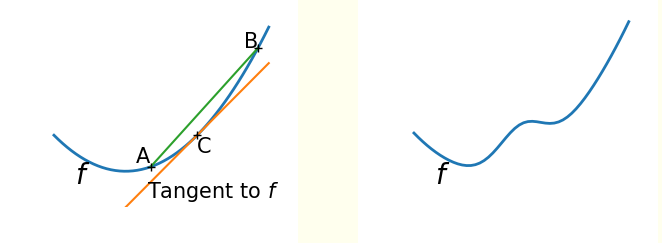
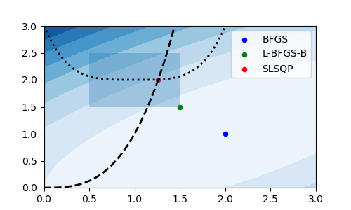

22. Optimización matemática#
¿Qué significa óptimo?
Sumamente bueno, que no puede ser mejor
Pero el significado de “mejor” depende de la situación. Considere por ejemplo el problema de escoger la ruta que debe tomar un vehículo de reparto de carga
La “mejor” ruta pudiera ser
la ruta más rápida
la ruta más barata
la ruta más directa
Importante
Para encontrar la mejor ruta primero debemos definir el criterio en que basaremos nuestra decisión
En el ejemplo anterior tenemos
la ruta de mínimo tiempo
la ruta de mínimo costo
la ruta de mínima distancia
La selección de la mejor ruta es un ejemplo de optimización. Más en general, la optimización es:
El proceso de encontrar la mejor solución para un problema dentro de un conjunto de posibilidades
La optimización es un área bastante estudiada de las matemáticas y algunos problemas de optimización requieren de soluciones muy específicas
El objetivo de esta lección es entregar una revisión general a los problemas de optimización que podemos resolver usando las herramientas del módulo scipy.optimize
%matplotlib inline
import matplotlib.pyplot as plt
import numpy as np
import scipy.optimize
22.1. Modelamiento matemático de un problema#
Para encontrar la mejor solución de un problema debemos primero modelarlo matemáticamente. En su forma más básica esto significa escribir el criterio de decisión como una función
Llamamos a esta función, la función objetivo del problema
Para el problema del vehículo de reparto que comentamos en la introducción, si tenemos una variable \(x\) que define la ruta y una función \(f(x)\) que retorna el tiempo de dicha ruta, podemos escribir
Supongamos ahora que el vehículo debe pasar por un cierto punto de la ciudad durante el reparto. La mejor ruta es ahora la de mínimo tiempo que además pasa por ese punto
Llamamos restricciones, a las condiciones adicionales que debe cumplir la mejor solución
Incluyendo restricciones el modelo matemático de nuestro problema sería
donde
\(x \in \mathbb{R}^D\) son las variables de decisión
\(f : \mathbb{R}^D \to \mathbb{R}\) es la función objetivo
\(g_i : \mathbb{R}^D \to \mathbb{R}\) son las restricciones de igualdad
\(h_j : \mathbb{R}^D \to \mathbb{R}\) son las restricciones de desigualdad
Optimizar es el proceso de encontrar el valor óptimo (mínimo) de la función objetivo en el espacio definido por las restricciones
Nota
En algunos problemas podríamos necesitar un máximo en lugar de un mínimo de la función objetivo
Sin embargo considere que
Por lo que podemos hablar de minimización sin pérdida de generalidad
22.2. Reconocer y clasificar problemas de optimización#
Estudiando algunas características del problema podemos seleccionar más fácilmente un algoritmo apropiado para resolverlo. Algunas preguntas guía que podemos realizar son
¿Es mi función objetivo de una variable (\(D=1\)) versus multi-variable (\(D>1\))?
Esto define la dimensionalidad o escala del problema
¿Existen restricciones de igualidad y/o desigualidad que debo cumplir?
Algunos algoritmos sólo pueden resolver problemas sin restricciones
¿Es mi función objetivo lineal o no lineal con respecto a la entrada?
Si todas las funciones son lineales entonces se pueden usar técnicas de programación lineal. Esto problemas son más simples que los no lineales
¿Es mi función objetivo convexa o no convexa?
Una función no-convexa (derecha) puede tener múltiples mínimos locales. Por el contrario una función convexa (izquierda) tiene un único mínimo
¿Es mi función objetivo continua y diferenciable o no-diferenciable?
Si la función no es continua entonces no puedo calcular su gradiente. Muchos métodos se basan en el gradiente para encontrar óptimos
22.3. Resolviendo problemas de optimización#
22.3.1. Solución de fuerza bruta#
La forma más “simple” de resolver un problema de optimización es la fuerza bruta, es decir evaluar \(f(x)\), \(g_i(x)\) y \(h_j(x)\) exhaustivamente para todos los valores de \(x\) hasta encontrar el mejor
Nota
Si \(x\) fuera una variable continua necesitariamos discretizarla para crear una grilla de búsqueda
La ventaja del método de fuerza bruta es que si la grilla es lo suficientemente fina entonces el método no confudirá un mínimo local con el mínimo global
Advertencia
El método de fuerza bruta es ingenuo pues se vuelve enormemente ineficiente a medida que crece el rango y la dimensionalidad de \(x\)
22.3.2. Solución analítica#
Si nuestra función es continua y derivable podemos intentar encontrar una solución analítica igualando su gradiente a cero, es decir
Estas soluciones se conocen como puntos estacionarios de \(f\), que incluyen los mínimos, máximos y puntos silla
Para comprobar que el punto estacionario es un mínimo primero calculamos la matriz Hessiana \(H\) donde sus componentes son
Luego si el Hessiano evaluado en \(x^*\) es definido positivo
entonces \(x^*\) es un mínimo
Nota
Si el problema tiene restricciones podríamos incluirlas utilizando multiplicadores de Lagrange
Advertencia
En muchos casos prácticos \(f(x)\) es demasiado complicada como para despejar una expresión análitica de \(x\) a partir de \(\nabla f (x^*)=0\)
22.3.3. Solución iterativa: Método de Newton y Gradiente Descedente#
Si evaluar el espacio de soluciones completo es infactible podríamos intentar explorarlo de forma parcial con un método iterativo
Los métodos iterativos parten de una o varias “soluciones iniciales” y luego aplican criterios que las “mejoran” paso a paso, acercándolas a la solución óptima
Sea \(x_t\) el valor actual de la variable de decisión. Podemos escribir el valor que tendrá en el siguiente paso como
y lo que queremos es encontrar el mejor \(\Delta x\) según nuestra función objetivo \(f(x)\). Para continuar consideremos la aproximación de Taylor de segundo orden de \(f\) en torno a \(x_{t+1}\)
Luego, si derivamos en función de \(\Delta x\) e igualamos a cero se tiene que
Que se conoce como la regla iterativa de Newton y donde
El gradiente \(\nabla f (x_t)\) nos indica la dirección en que debemos desplazarnos
El hessiano \(H_f (x_t)\) nos indica la distancia que debemos desplazarnos
Prudencia
Usando Newton estamos asumiendo que la aproximación de segundo orden de \(f\) es buena
La solución del método de Newton depende de \(x_0\) (solución inicial). Es conveniente probar varios valores de \(x_0\)
Si la dimensionalidad de \(x\) es grande, invertir el hessiano (matriz de \(M\times M\)) puede ser costoso
Si el Hessiano es prohibitivo podemos usar una aproximación de primer orden de la regla de Newton. Esto resulta en el clásico método conocido como gradiente descendente
donde se reemplaza el Hessiano por una constante \(\eta\) llamado “paso” o “tasa de aprendizaje”.
Es importante calibrar adecuadamente \(\eta\). Si es muy grande la adaptación será inestable, y si es muy pequeño demoraremos demasiado en llegar al óptimo. La siguiente figura lo ejemplifica
{kind=link}
22.4. Tutorial de scipy.optimize#
Podemos realizar optimización matemática utilizando el módulo scipy.optimize. La función principal de este módulo es minimize la cual engloba a una larga lista de métodos de optimización
Los argumentos esta función son
from scipy.optimize import minimize
minimize(fun, # Función objetivo
x0, # Valor inicial de la variable de decisión
args=(), # Argumentos adicionales de fun
method=None, # El método de optimización a usar
jac=None, # Función que calcula la matriz de primeras derivadas (jacobiano)
bounds=None, # Secuencia de tuplas (min, max) con cotas para x
constraints=(), # Diccinario o lista de restricciones (más detalles a continuación)
tol=None, # Tolerancia para el término de la optimización
callback=None, # Una función que se ejecuta luego de cada iteración
options=None, # Diccionario con las opciones especificas para cada método
...
)
Para utilizar minimize la función objetivo debe estar definida de la siguiente forma
def fun(x, *args):
...
return foo
donde
xdebe ser un escalar o un ndarrayfoodebe ser un valor escalar flotanteLos argumentos adicionales a
xse deben desempaquetar de la tuplaargs
Advertencia
Si el problema a resolver es de maximización, debemos convertirlo a un problema de minimización antes de usar minimize
Nota
Si no se especifica method se utiliza por defecto BFGS, un método de tipo quasi-Newton que utiliza el gradiente de la función objetivo y una aproximación del inverso de su Hessiano
Ejemplo
Sea la siguiente función objetivo con variable de decisión escalar
Para optimizarla con scipy primero debemos definirla:
def f(x):
return x**2 - 2*x + 5*np.sin(2*x)
Luego la optimizamos con minimize especificando como mínimo la función misma y una solución inicial
x0 = -2
solution = scipy.optimize.minimize(f, x0)
solution es un objeto de tipo OptimizeResult, cuyos atributos más importantes son
x: Mejor valor encontrado de la variable de decisiónfun: Valor de la función objetivo en el óptimo encontradojac: Valor de la matriz de primeras derivadas en el óptimo encontradosuccess: Booleano que indica si la optimización se llevó a cabo con exitomessage:Mensaje indicando la razón de término, útil para debuggear
solution.message
'Optimization terminated successfully.'
Si visualizamos la solución con matplotlib
x_plot = np.linspace(-5, 5, num=100)
fig, ax = plt.subplots(figsize=(7, 4), tight_layout=True)
ax.plot(x_plot, f(x_plot))
ax.scatter(x0, f(x0), s=100, c='k')
ax.arrow(x0, f(x0), solution.x[0]-x0, f(solution.x[0])-f(x0),
head_width=0.3, head_length=3, color='k', length_includes_head=True)
ax.set_xlabel('Variable de decisión')
ax.set_ylabel('Función objetivo');
La función es no convexa y el método quasi-Newton ha encontrado un mínimo local
Consejo
En problemas no-convexos es conveniente probar distintas soluciones iniciales
x0 = np.array([-4.5, -2, 4])
solution = []
for x0_ in x0:
solution.append(scipy.optimize.minimize(f, x0_))
bests = np.array([solution.x[0] for solution in solution])
fig, ax = plt.subplots(figsize=(7, 4), tight_layout=True)
ax.plot(x_plot, f(x_plot))
ax.scatter(x0, f(x0), label='solución inicial', s=100, c='k')
for x0_, best in zip(x0, bests):
ax.arrow(x0_, f(x0_), best-x0_, f(best)-f(x0_),
head_width=0.3, head_length=3, color='k', length_includes_head=True)
ax.set_xlabel('Variable de decisión')
ax.set_ylabel('Función objetivo');
El argumento jac de minimize espera la función de primeras derivadas o vector jacobiano. Este debe seguir una forma similar a la función objetivo
def jac(x, *args):
...
return dfoo
donde
donde
xyargsdeben coincidir confun.dfoodebe tener la misma dimensionalidad dex
Si no se especifica jac las derivadas se calcularán de forma numérica, lo cual es menos eficiente
def df(x):
return 2*x - 2 + 2*5*np.cos(2*x)
%timeit -r10 -n10 scipy.optimize.minimize(f, 0.0)
%timeit -r10 -n10 scipy.optimize.minimize(f, 0.0, jac=df)
2.4 ms ± 318 µs per loop (mean ± std. dev. of 10 runs, 10 loops each)
1.09 ms ± 29.4 µs per loop (mean ± std. dev. of 10 runs, 10 loops each)
A continuación describiremos algunos de los métodos disponibles a través del argumento method de minimize
22.4.1. Métodos para optimización sin restricciones#
Con estos métodos no se pueden especificar los argumentos constraint y/o bounds.
Por ejemplo están
method=CG: Gradiente conjugado. Es una versión de GD con tasa de aprendizaje adaptivamethod=BFGS: Es un método de tipo quasi-Newton con Hessiano inverso aproximado a cada paso.
Los cuales usan gradientes, ya sea numérico o especificado mediante el argumento jac. Si la derivada puede obtenerse analiticamente y es confiable estos métodos tendrán un desempeño superior a las alternativas
Luego están
method=Nelder-Mead: Es una heurística tipo simplex. Animación que muestra su funcionamientomethod=Powell: Algoritmo de búsqueda de linea siguiendo una dirección a la vez.
Los cuales no usan gradientes. Estos métodos pueden usarse cuando la función objetivo es no-derivable o demasiado ruidosa para ser derivada
22.4.2. Métodos para optimización con restricciones#
Con estos métodos se pueden incorporar restricciones al problema ya sea en forma de cotas para las variables o ecuaciones de igualdad/desigualdad que las variables deben cumplir
Las restricciones de igualdad deben ser siempre de la forma \(g(x) = 0\)
Las restricciones de desigualdad deben ser siempre de la forma \(h(x) \geq 0 \)
En la práctica las restricciones se entregan como una tupla en el argumento constraint de method. Cada restricción es un diccionario con las llaves type y fun para especificar el tipo (string eq o ineq) y la función, respectivamente. Opcionalmente se puede especificar jac, la matriz de primeras derivadas de fun y arg una tupla con argumentos adicionales para fun y jac
Por ejemplo si se tiene la siguiente restricción
se escribe como:
h1 = {'type': 'ineq',
'fun' : lambda x: x**2 - 2*x -1,
'jac' : lambda x: np.array([2*x - 2])}
Advertencia
Si tenemos restricciones del tipo \(h(x)\leq 0\) debemos transformarlas a \(-h(x)\geq 0\) antes de implementarlas
Los métodos que permiten especificar restricciones son
L-BFGS-B: Similar a BFGS pero permite añadir cotas (bounds) para la variable de decisiónSLSQP: Sequential Least Squares Programming. Este método acepta cotas, restricciones de igualdad y restricciones de desigualdad
Ejemplo
Sea la siguiente función de costo con dos variables de decisión
sujeta a
donde
Resolvamos utilizando minimize. La solución sin considerar restricciones sería:
def f(z):
return -(2*z[0]*z[1] + 2*z[0] - z[0]**2 - 2*z[1]**2)
def df(z):
return np.array([-2*z[1] - 2 + 2*z[0], -2*z[0] + 4*z[1]])
x0 = np.array([0, 1])
solution_no_constraint = scipy.optimize.minimize(f, x0, jac=df, method='BFGS')
solution_no_constraint.x
array([2., 1.])
La solución considerando cotas paras las variables de decisión sería:
bounds = ((0.5, 1.5), (1.5, 2.5))
solution_with_bounds = scipy.optimize.minimize(f, x0, jac=df, method='L-BFGS-B', bounds=bounds)
solution_with_bounds.x
array([1.5, 1.5])
Finalmente la solución considerando cotas y restricciones sería:
cons = ({'type': 'eq',
'fun': lambda z: z[0]**3 - z[1],
'jac': lambda z: np.array([3*z[0]**2, -1.])
},
{'type': 'ineq',
'fun': lambda z: z[1] - (z[0]-1)**4 - 2,
'jac': lambda z: np.array([-4*(z[0]-1)**3, 1.])
})
solution_with_constraints = scipy.optimize.minimize(f, x0, jac=df, method='SLSQP',
bounds=bounds, constraints=cons)
solution_with_constraints.x
array([1.26089314, 2.00463288])
Podemos visualizar estas soluciones con matplotlib, el color de la superficie representa la función objetivo, el área oscura las cotas y las lineas punteadas las restricciones
x = np.linspace(0, 3, 100)
y = np.linspace(0, 3, 100)
A, B = np.meshgrid(x, y)
C = f(np.vstack([A.ravel(), B.ravel()])).reshape((100,100))
fig, ax = plt.subplots(figsize=(9, 5))
cm = ax.contourf(A, B, C, cmap=plt.cm.Blues);
ax.plot(x, x**3, 'k--', lw=2)
ax.plot(x, 2+(x-1)**4, 'k--', lw=2)
ax.fill([0.5, 0.5, 1.5, 1.5], [2.5, 1.5, 1.5, 2.5], alpha=0.3)
ax.axis([0, 3, 0, 3])
ax.scatter(solution_no_constraint.x[0], solution_no_constraint.x[1],
s=100, c='b', label='BFGS');
ax.scatter(solution_with_bounds.x[0], solution_with_bounds.x[1],
s=100, c='g', label='L-BFGS-B');
ax.scatter(solution_with_constraints.x[0], solution_with_constraints.x[1],
s=100, c='r', label='SLSQP');
fig.colorbar(cm)
plt.legend();
22.5. Más allá de esta lección#
Ver también
Funcionalidades de SciPy que no se exploraron en esta lección:
Advertencia
Tenga en cuenta las siguientes limitaciones:
Scipy puede ser lento para problemas de gran envergadura. Si este es el caso sugiero explorar los wrappers de Python de CVXOPT
Scipy no tiene optimizadores para variables de decisión discretas. En caso de necesitar utilizar un algoritmo de optimización externo/comercial (por ejemplo CPLEX, Gurobi o AMPL) , sugiero explorar la librería Pyomo